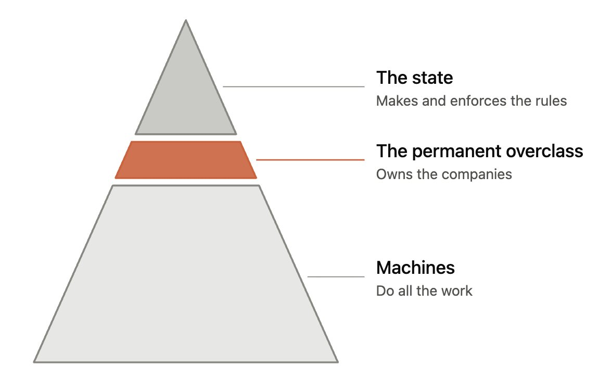
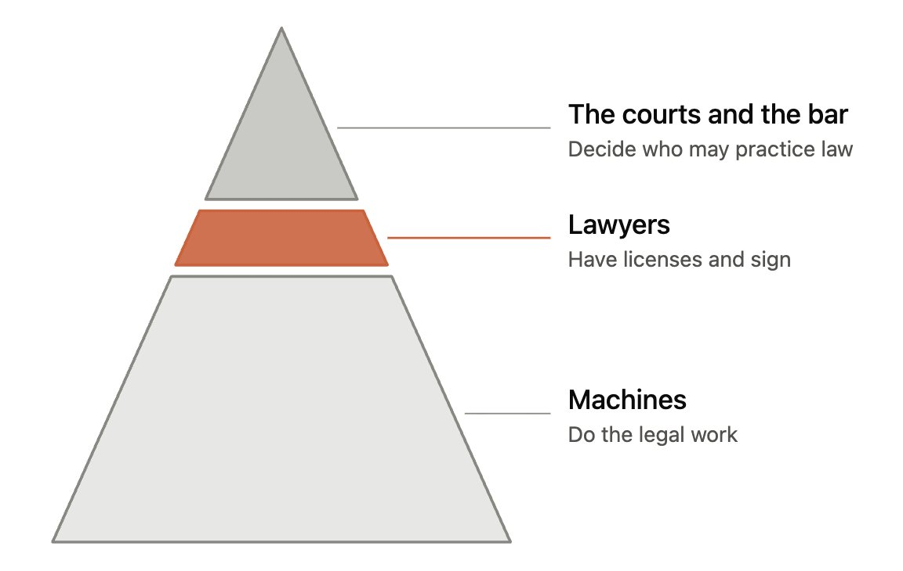

nov 23, 2026
Lawyers Won't Escape the Permanent Underclass
If you ask someone in tech and someone in law the same questions about AI and work, you will get very different answers.
What will it do to your job?
Tech: nobody knows.
Law: not much, because it will never have judgment.
What is the biggest risk?
Tech: it does all knowledge work and most of us end up in a permanent underclass.
Law: fake citations, waived privilege and a malpractice claim.
These are two different conversations. I get the sense that many lawyers have never seen the tech one. So below I apply its most extreme idea to law. It is a thought experiment. It is not a prediction and it is not what I believe. What I do believe comes after it.
The Underclass Argument
The Underclass Argument says AI might do all knowledge work and leave most people, including the people building it, in a permanent underclass. Some versions say nobody escapes, even the overclass. Few in tech are sure this will happen. Almost none would call it impossible. Let me explain.
The Premise
Let's start from this premise of ASI: AI that does all cognitive work at human level or better.
This is not a crazy idea. Alexandr Wang, Chief AI Officer at Meta, said yesterday:
it is likely that AI will become the greatest contributor of progress across nearly every field, vastly outperforming the best humans.
We don't know if ASI will happen. You only need to assume it for the sake of the experiment.
Legal Judgment
Most of us will accept the premise and still say AI will never have judgment. Ask us what judgment is and the answers get vague. A judgment call is knowing (1) the law, (2) custom, (3) the client and (4) what the other side will do, then (5) weighing what matters and (6) signing the recommendation.
There are two ways to see it:
- Judgment is mostly context: 1 to 4 are things you know or can find out and 5 is those put together. When a call feels hard, you're missing context.
- Judgment is the hardest thinking there is: 5 takes a career of tacit knowledge and developed instinct. That is still thinking and the premise is a machine that thinks better than the best human.
Either way, the argument concludes that AI ends up with judgment. It adds that every lawyer is proof judgment can be learned: if it can travel into a lawyer through many track changes, emails and conversations over a career, it can travel into a machine.
So if a machine can have judgment, what follows?
What Follows
This is where the argument goes furthest. Every step below can be argued with. The outline is all you need for what I actually want to ask you at the end.
The argument says there is no more low-judgment and high-judgment work. There is just work and AI does all of it. Here, partners don't escape either. What they have left is a license. What is it worth on its own?
The argument answers with a pyramid.

The middle layer is the permanent overclass and the claim is that it isn't safe either. Today they have power because the state needs them to run the companies and create the wealth. Once machines do that, all they have is ownership, which the state can take away.
Now draw the same pyramid for law.

The middle layer is there because a licensed lawyer's judgment is supposed to protect the public. If you take away judgment, the license is a permission worth something for as long as the top says so.
This is where the two pyramids stop matching and it is the step I find hardest to believe. While in tech, the overclass and the state are different people, in law, they are the same profession: the judges and regulators who decide who needs a license are lawyers themselves. I don't expect them to abolish it.
There are also reasons clients hire lawyers that would break this argument for us. I won't list them. What comes next is the part I care about.
Why I'm Telling You This
To repeat: this does not reflect my views. It is a thought experiment.
Here is what I actually think: Nobody knows. That is the consensus in tech and I think it is the right one. If they think their own jobs are at risk, why should we be so sure ours aren't?
The decisions get made now anyway and they are about our future too. Think about it: what separates handing over drafting from handing over review or advice? Each one goes as soon as AI seems good enough at it. Nobody has decided what good enough is or where it stops.
However, none of this is inevitable: a different outcome takes people deciding what stays in human hands and why. I believe thinking through the extreme case helps us make better decisions now, whether or not it ever happens.
Lawyers can't take part in the decisions while insisting we are above it all and there is nothing to discuss.
We are already drawing a line. Sometimes when we say "AI can't do X", we mean "AI shouldn't do X". That is a boundary and the instinct behind it is good. It is just stated as a prediction about technology, where lawyers have no special standing and one product release can prove us wrong.
So I ask for two things:
- Reckon with what tech has accepted: AI may be able to do all of it.
- Say where we want the boundary and why. We have done this before. A jury of laypeople reaches the verdict. A client decides whether to settle. Both rules give the decision to someone who knows less, on purpose.
Where should the boundary be? At drafting? At advice? I have spent months thinking about it and I don't have an answer. I do know it can't be arbitrary.
So here are three questions that can get the debate started:
- What is legal judgment? If it is more than context or thinking, say what.
- Why can a machine never have it?
- If you think it can, why shouldn't a machine exercise it?